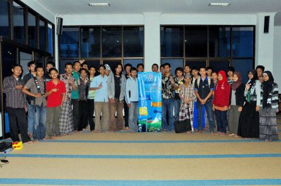
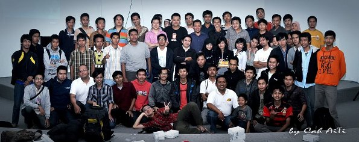

[Weboender]
Komunitas Web di UIN Malang
[Sejarah]
Weboender dibentuk oleh 10 founder di Masjid Ulul Albab tanggal 29 April 2011. Ketua pertama Sofyan Setiawan. Pemberi nama komunitas Dian Ahkam Sani. Pembuat Logo Mohammad Arif
[Visi|Misi]
Weboender dibentuk oleh 10 founder di Masjid Ulul Albab tanggal 29 April 2011. Ketua pertama Sofyan Setiawan. Pemberi nama komunitas Dian Ahkam Sani. Pembuat Logo Mohammad Arif
[Pengurus]
[Belajar Bareng]

[MeetUp]

[Portofolio Kami]
[Seperti]